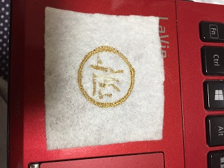

刺繍ミシン
こちらもカッティングプロッターと同様、イラストレーターで自分の好きなデザインを作り、
そのデータをUSBメモリに移し、機械に読み込ませて、布に刺繍した。
思っていたより、出来の質が荒くなってしまったので、今度使用する際は設定を正確にやりたい。


こちらもカッティングプロッターと同様、イラストレーターで自分の好きなデザインを作り、
そのデータをUSBメモリに移し、機械に読み込ませて、布に刺繍した。
思っていたより、出来の質が荒くなってしまったので、今度使用する際は設定を正確にやりたい。